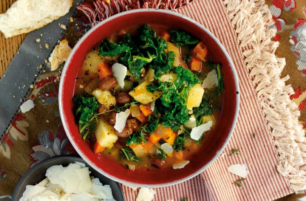

Borlotti bean and kale soup recipe

Serves:
Prep:
Cooking:
Skill:
8
15 Min
20 Min
Easy
This borlotti bean and kale soup is light yet filling, making it the perfect meal for any time of the year. Served with crusty bread and Parmesan shavings, this soup makes a meal in itself. Cavolo nero or Savoy cabbage would be good in this soup as well if you can’t find kale. Prepared in just 35 minutes, you can make a healthy and substantial meal quickly and easily with this delicious recipe.
Ingredients
- 1 onion, peeled and diced
- 1 large carrot, peeled and diced (about 200g)
- 1 large potato (300-400g, peeled weight) cut into small chunks
- A few fresh thyme sprigs and 2 bay leaves
- 1ltr hot vegetable or chicken stock
- 400g can borlotti beans, drained and rinsed
- About 125g chopped curly kale
- Shaved Parmesan, optional
Method
- Heat the oil in a large pan. Add the onion and carrot and cook over a medium heat for about 5 minutes.
- Add the potato, tomato purée, thyme and bay, stir well for a couple of minutes and pour in the stock. Bring to the boil then simmer gently for 10 minutes, partially covered.
- Stir in the beans and some seasoning. Bring back to the boil then put the kale on top and let it steam for 5 minutes.
- Spoon into warm bowls. Top with Parmesan. Drizzle with olive oil and serve with crusty bread.
Top tip for making Borlotti bean and kale soup
Stretch the soup further by adding some chopped celery stalks, and/or 2 chopped turnips. Add some garlic or any type of beans you like. To make it meaty, add crispy bacon, pancetta orchunks of cooked ham.